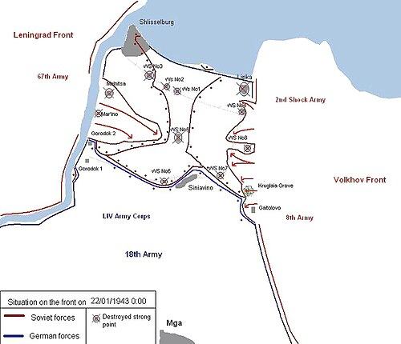
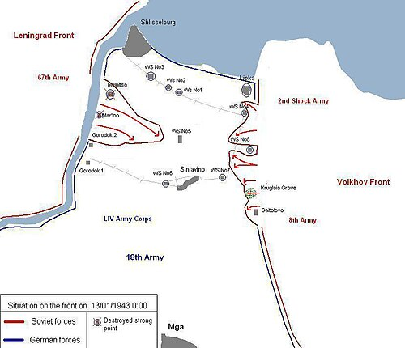
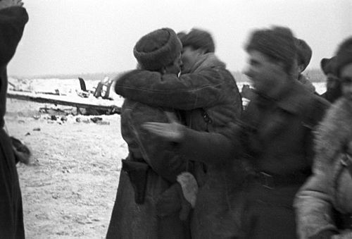
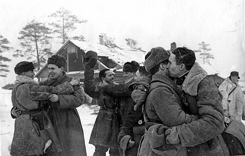

Date
12–30 January 1943
Location
Leningrad front (Soviet Union)
Result
Soviet Victory
Overview
Operation Iskra (Spark) opened a land corridor to Leningrad, breaking the German siege's tight blockade.
| Faction | Commanders | Casualties |
|---|---|---|
| USSR | Govorov | ~33,000 killed |
| Germany | Georg Lindemann | ~12,000 killed |


The Conflict
Soviet forces attacked along the southern approaches to Leningrad, punching a narrow corridor along the shore of Lake Ladoga; fierce fighting secured the 'Road of Life' and railway links for supplies.
Although the corridor was narrow and contested, it significantly eased civilian starvation and allowed reinforcements and materiel to flow into the city.


Significance & Aftermath
- Alleviated the Siege of Leningrad and improved civilian survival.
- Enabled further Soviet offensives in 1943 and boosted morale.